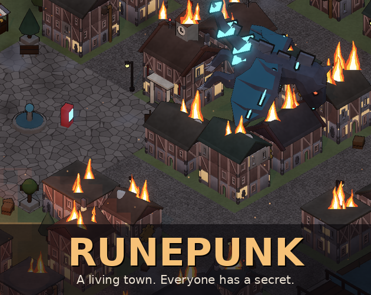
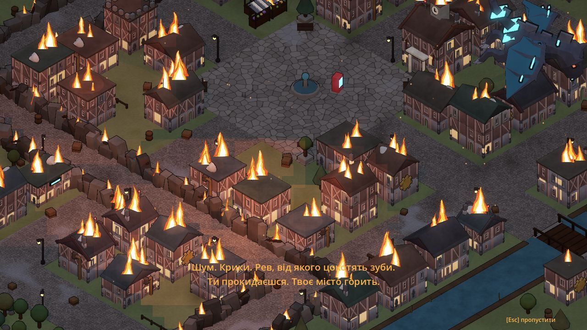
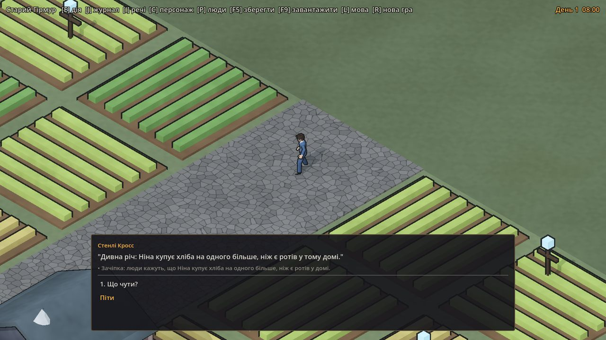
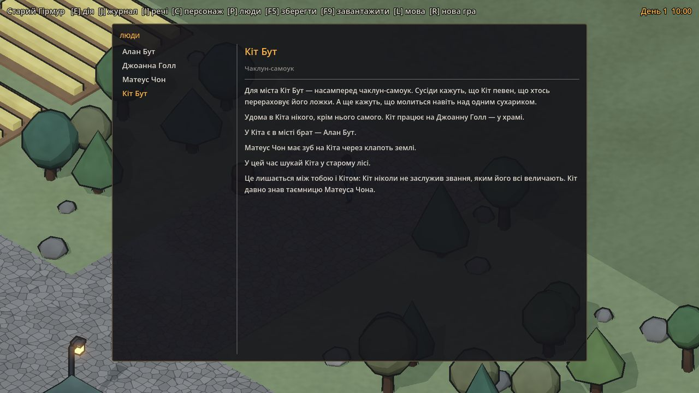

A living town. Everyone has a secret. / Живе місто. У кожного є таємниця.

Українська
Runepunk — ізометрична RPG про маленьке живе місто в дусі Ultima VII. Ранній прототип.
Твоє рідне місто палає під крилами кібердракона, і ти тікаєш у сусіднє. Кожне місто генерується: вулиці й квартали, жителі й найголовніше — павутина між ними. Хто кому брат. Хто кому винен. Хто когось таємно кохає. Хто на кого має зуб і чому. Хто що приховує і хто про це знає.
З цієї павутини виростають історії, тож кожне місто розповідає свої. «Привид» у пекарні виявляється братом-дезертиром пекарки. Мірошник, що ніколи сам не читає листів, просто не вміє читати, а сусід уже шість років читає їх йому «творчо».

Пролог: місто горить, кібердракон над площею
Що можна робити
Говорити з будь-ким або питати власними словами: «що чути?», про людину, звинуватити.
Підслуховувати, розпитувати, обшукувати льохи й горища. Натяки стають зачіпками, зачіпки — доказами.
Вирішувати, як вчинити: по-доброму, хитро, жадібно чи жорстоко. Місто пам'ятає.
Дарувати те, що людина справді любить, заводити друзів, брати друга з собою.
Торгувати, працювати зміну на млині, сплатити чужий борг.
Дивитися, як місто живе: робота, таверна, сон; ринок, свята, весілля й похорони; дощ, туман, сніг, пори року. Уночі місто змінюється без тебе.
Голос у голові коментує все, що ти робиш, і штовхає в протилежний бік. Тіло поступово змінюється: роги чи німб.

«Що чути?» — плітка, що стає зачіпкою

Біографія жителя, складена з павутини міста
English
Runepunk is an isometric RPG about a small, living town, in the spirit of Ultima VII. An early prototype.
Your home town burns under a cyber-dragon's wings, and you escape into the neighbouring town. Every town is generated: its streets and districts, its people and, most of all, the web between them. Who is whose brother. Who owes whom. Who is secretly in love. Who resents whom, and why. Who hides something, and who knows it.
Stories grow out of that web, so every town tells different ones. The baker's "ghost" turns out to be her deserter brother. The miller who never reads his own letters can't read at all, and his neighbour has been reading them to him "creatively" for six years.
What you can do
Talk to anyone, or type your own question: ask what's new, ask about a person, accuse someone.
Overhear, ask around, search cellars and lofts. Hints become leads, leads become proof.
Choose how to deal with it: kind, clever, greedy or cruel. The town remembers.
Give gifts people actually like, make friends, take a friend along.
Trade, work a shift at the mill, pay someone's debt.
Watch the town live: work, the tavern, sleep; markets, festivals, weddings and funerals; rain, fog, snow, seasons. Overnight the town moves on without you.
A voice in your head comments on everything you do and pushes you the other way. Your body slowly changes: horns or a halo.